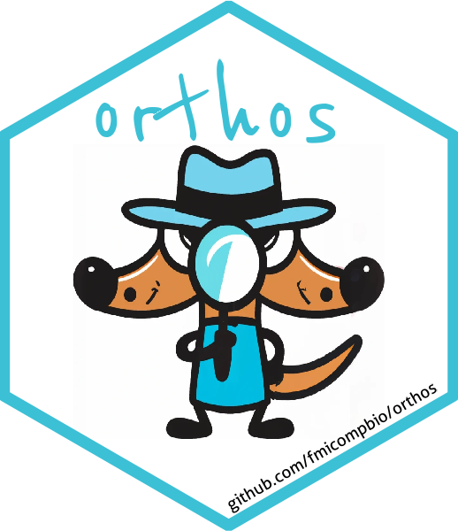
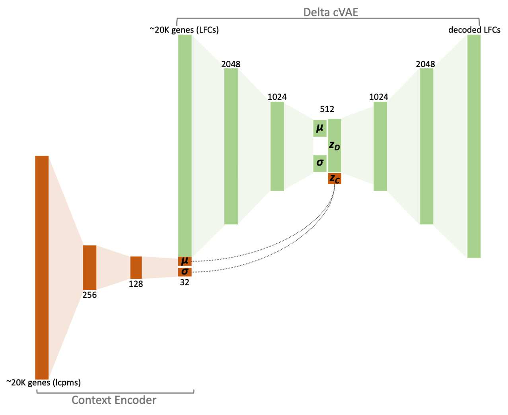

Differential expression analysis upon cellular perturbations is the most commonly used tool for probing molecular mechanisms of action due to its simplicity and low cost. However, interpretation of such experiments is confounded by the complex and nuanced impact of experimental treatments on cellular processes.
Enter orthos, a generative modelling-based approach that disentangles experiment-specific from non-specific effects of perturbations on gene expression. Utilizing a large corpus of gene expression contrasts (>100K annotated / >1M augmented) compiled from the ARCHS4 database of uniformly processed RNAseq experiments we trained conditional variational models that accurately capture and isolate “polytopic” (non-specific, observed across multiple treatments) effects while accounting for context. The residual, specific component obtained from this decomposition offers a more unequivocal experimental signature and is a proxy more closely related to the direct molecular effects of a treatment when compared to the raw signal.
In addition to providing a clearer understanding of the effects of experimental treatments on gene exrpession orthos also enables researchers to query the contrast database with arbitrary contrasts and identify experiments with similar specific effects ultimately helping to map pharmacological, physiological or genetic treatments to mechanisms of action.
orthos is developed at the FMI-Friedrich Miescher Institute for Biomedical Research and is supported by funding from the NIBR-Novartis Institutes for Biomedical Research.
Current contributors include:
orthos can be installed from from Bioconductor using BiocManager::install():
if (!requireNamespace("BiocManager", quietly = TRUE))
install.packages("BiocManager")
BiocManager::install("orthos")
# or also...
BiocManager::install("orthos", dependencies = TRUE)The workhorse behind orthos are organism-specific conditional variational autoencoder (cVAE) models that break down the variance of a given differential expression experiment into a non-specific (polytopic) and an experiment-specific components.
The non-specific (polytopic) component corresponds to gene variance that has been observed across multiple instances during training, while the experiment-specific variance is fairly unique to the experiment.
Given these inputs, the model maps the contrast to a concise latent representation (zD) which is then used to generate a decoded version of the contrast.
This decoded contrast corresponds directly to the polytopic (non-specific) component of the observed effects; it subsumes the gene variance that the model can account for because it has been encountered, in some form, during training. The residual obtained after removing the decoded contrast from the original one is the specific component; this encompasses the gene variance that the model cannot account for (random noise + experiment-specific biological effects).

A typical analysis with orthos involves two main steps:
Decomposing one or several contrasts into their corresponding specific and polytopic (non-specific) fraction and
Performing queries with the original and decomposed specific and polytopic fractions against the orthosData contrast database
For more details on usage please refer to the package vignette.